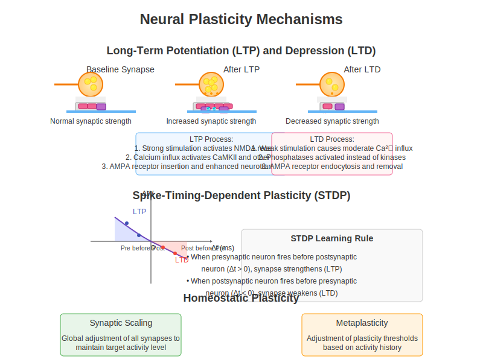

Chapter 6: Neurostimulation & Plasticity#
Learning Objectives
By the end of this chapter, you will be able to:
Understand fundamental mechanisms of neural plasticity and synaptic modification
Describe key neuromodulatory systems (dopamine, acetylcholine, etc.) and their effects
Connect biological plasticity principles to machine learning algorithms
Evaluate non-invasive brain stimulation techniques and their applications
Implement computational models of neural plasticity and stimulation
Apply neuroscience-inspired plasticity concepts to improve AI systems
6.1 Neural Plasticity Mechanisms#
Neural plasticity refers to the brain’s remarkable ability to modify its structure and function in response to experience. This section explores the fundamental mechanisms that enable learning and adaptation in biological neural networks.
Hebbian Learning: Cells That Fire Together, Wire Together#
Donald Hebb’s seminal postulate (1949) established the foundation of modern neural plasticity theory: “When an axon of cell A is near enough to excite cell B and repeatedly or persistently takes part in firing it, some growth process or metabolic change takes place in one or both cells such that A’s efficiency, as one of the cells firing B, is increased.”
This principle is often simplified as “cells that fire together, wire together.” Mathematically, classical Hebbian learning can be expressed as:
Where:
\(\Delta w_{ij}\) is the change in synaptic weight
\(\eta\) is the learning rate
\(x_i\) is the presynaptic activity
\(y_j\) is the postsynaptic activity
While elegant, pure Hebbian learning is unstable as it creates positive feedback loops that can lead to runaway excitation. This necessitates additional regulatory mechanisms.
Long-Term Potentiation (LTP) and Depression (LTD)#
LTP and LTD are cellular mechanisms that implement Hebbian learning by strengthening or weakening synapses.
Long-Term Potentiation (LTP):
High-frequency stimulation (≈100 Hz) can induce lasting increases in synaptic strength
NMDA receptors act as coincidence detectors that require both presynaptic glutamate release and postsynaptic depolarization
Calcium influx through NMDA receptors activates CaMKII, leading to AMPA receptor insertion and synaptic strengthening
First demonstrated in hippocampal slices by Bliss and Lømo (1973)
Long-Term Depression (LTD):
Low-frequency stimulation (≈1 Hz) induces sustained decreases in synaptic strength
Moderate calcium influx activates phosphatases rather than kinases
Results in AMPA receptor internalization and synaptic weakening
LTP and LTD can last from hours to months and provide a cellular basis for memory formation and learning.
Spike-Timing-Dependent Plasticity (STDP)#
STDP refines Hebbian learning by incorporating the precise timing relationship between pre- and postsynaptic spikes:
If a presynaptic neuron fires slightly before a postsynaptic neuron (within ~20ms), the synapse strengthens (LTP)
If a presynaptic neuron fires after a postsynaptic neuron, the synapse weakens (LTD)
The magnitude of change decreases exponentially with the time difference
This temporal precision allows neural networks to learn causal relationships and temporal sequences. Mathematically, STDP can be modeled as:
Where \(\Delta t = t_{post} - t_{pre}\) is the timing difference between spikes.
Homeostatic Plasticity#
While Hebbian mechanisms enable specific changes in response to activity patterns, homeostatic plasticity maintains network stability:
Synaptic Scaling:
Global adjustment of all synapses to maintain a target activity level
Multiplicative scaling preserves relative differences between synapses
Occurs over longer timescales (days) than Hebbian plasticity
Metaplasticity:
“Plasticity of plasticity” - adjustment of plasticity thresholds based on history
Bienenstock-Cooper-Munro (BCM) theory introduces sliding threshold for potentiation/depression
Higher activity raises threshold, making LTP harder and LTD easier
Intrinsic Plasticity:
Adjustment of neuronal excitability through ion channel modulation
Compensates for changes in synaptic inputs to maintain stable firing rates
These homeostatic mechanisms prevent neuronal silence or seizure-like overactivity while allowing meaningful learning to occur.
Structural vs. Functional Plasticity#
Neural plasticity operates on multiple timescales and involves both functional and structural changes:

Functional Plasticity:
Changes in synaptic strength without morphological alterations
Occurs rapidly (minutes to hours)
Mediated by receptor trafficking, phosphorylation, and neurotransmitter release changes
Structural Plasticity:
Formation, elimination, and morphological changes of synaptic connections
Occurs more slowly (hours to days)
Involves dendritic spine growth/retraction, axonal sprouting, and synaptogenesis
Converts temporary memories into more permanent forms
Critical Periods and Adult Plasticity#
Critical periods are developmental windows of heightened plasticity:
Visual system critical period: Ocular dominance plasticity occurs readily in young animals but diminishes in adulthood
Language acquisition: Enhanced capacity to learn languages without accent before puberty
Molecular regulators include perineuronal nets, myelin-associated inhibitors, and GABA maturation
While adult plasticity is more restricted, substantial rewiring remains possible:
Hippocampus and associative cortical areas maintain higher plasticity throughout life
Adult neurogenesis occurs in specific brain regions (hippocampus, subventricular zone)
Environmental enrichment, exercise, and certain neurostimulation protocols can reactivate juvenile-like plasticity
6.2 Neuromodulatory Systems#
Neuromodulators are chemical messengers that regulate neural activity and plasticity on broader spatial and temporal scales than fast neurotransmitters. They constitute the brain’s internal control system for learning and adaptation.

Dopamine: The Reward Signal#
The dopaminergic system plays a crucial role in reward-based learning and motivation:
Anatomical Organization:
Nigrostriatal pathway (substantia nigra → striatum): Motor control
Mesolimbic pathway (VTA → nucleus accumbens, amygdala): Reward learning
Mesocortical pathway (VTA → prefrontal cortex): Executive function, working memory
Receptor Types:
D1-like receptors (D1, D5): Coupled to Gs proteins, increase cAMP, generally excitatory
D2-like receptors (D2, D3, D4): Coupled to Gi proteins, decrease cAMP, generally inhibitory
Key Functions:
Reward prediction error signaling: Phasic dopamine release encodes the difference between expected and actual rewards
Incentive salience: Makes rewarding stimuli “wanted” rather than just “liked”
Working memory gating: Controls information flow into prefrontal working memory circuits
Motor program selection: Facilitates movement initiation via basal ganglia circuits
Plasticity Effects:
D1 receptor activation enhances LTP in striatum and prefrontal cortex
Can convert LTD to LTP when timed appropriately with synaptic activity
Provides the third factor in three-factor learning rules (Hebbian plasticity gated by reward)
Computational Parallel:
Temporal difference (TD) learning in reinforcement learning algorithms
Actor-critic models with dopamine as the TD error signal
Reward-modulated STDP in neuromorphic computing
Acetylcholine: The Attention Modulator#
The cholinergic system regulates attention, arousal, and memory formation:
Anatomical Organization:
Basal forebrain nuclei (including nucleus basalis) → widespread cortical projections
Brainstem nuclei → thalamus, midbrain, and other subcortical structures
Receptor Types:
Nicotinic receptors: Ionotropic, fast-acting, enhance neural excitability
Muscarinic receptors: Metabotropic, slower modulatory effects via G-protein signaling
Key Functions:
Attention: Enhances processing of behaviorally relevant stimuli
Signal-to-noise ratio: Increases response to relevant inputs while suppressing background activity
Cortical plasticity: Enables experience-dependent map reorganization
Memory encoding: Essential for forming new episodic memories
Plasticity Effects:
Enhances LTP in hippocampus when released during learning
Lowers threshold for spike-timing-dependent plasticity
Enables map reorganization in sensory cortices during learning
Computational Parallel:
Attention mechanisms in artificial neural networks
Dropout regularization (mimicking fluctuating acetylcholine levels during sleep/wake cycles)
Precision weighting in predictive coding models
Norepinephrine: The Alertness Signal#
The noradrenergic system regulates arousal and behavioral flexibility:
Anatomical Organization:
Primary source: Locus coeruleus
Widespread projections throughout cerebral cortex, cerebellum, brainstem, and spinal cord
Receptor Types:
α1: Excitatory, increases neural responsiveness
α2: Inhibitory, provides negative feedback to locus coeruleus
β1, β2: Enhance excitability and synaptic transmission
Key Functions:
Arousal regulation: Transitions between sleep, drowsiness, and alertness
Attention shifting: Facilitates reorienting to novel or significant stimuli
Stress response: Coordinates physiological responses to threat
Memory consolidation: Enhances storage of emotionally salient information
Plasticity Effects:
Enhances LTP in amygdala (emotional learning)
Promotes memory consolidation when released during emotional arousal
Facilitates synaptic tagging, determining which memories are stored long-term
Computational Parallel:
Exploration-exploitation tradeoff in reinforcement learning
Learning rate adjustment based on environmental novelty or uncertainty
Adaptive gain control in attention networks
Serotonin: The Mood Regulator#
The serotonergic system influences mood, impulse control, and time horizons for decision-making:
Anatomical Organization:
Primary source: Raphe nuclei in brainstem
Projects widely throughout cortex, limbic system, and spinal cord
Receptor Types:
Seven families (5-HT1-7) with at least 14 known subtypes
Diverse effects depending on receptor subtype and location
Key Functions:
Mood regulation: Balanced activity essential for emotional stability
Impulse control: Inhibits premature responding and aggression
Appetite and sleep regulation: Modulates hypothalamic functions
Social behavior: Influences social cognition and interaction
Plasticity Effects:
Complex and often region-specific effects on plasticity
Promotes neurogenesis in hippocampus
Facilitates ocular dominance plasticity in visual cortex
Modulates stress effects on plasticity
Computational Parallel:
Temporal discounting in reinforcement learning
Mood-dependent learning bias in decision models
Inhibitory control in cognitive architectures
Interactions and Integration#
Neuromodulatory systems do not operate in isolation but form a complex, interconnected regulatory network:
Dopamine-acetylcholine interactions in striatum control learning from rewards
Norepinephrine-serotonin balance influences impulsivity and patience
Dopamine-serotonin balance regulates approach vs. avoidance behaviors
Acetylcholine-norepinephrine interactions control attention allocation
This orchestrated control enables sophisticated regulation of neural plasticity across different brain states and behavioral contexts.
6.3 Brain Stimulation Techniques#
Brain stimulation techniques allow direct manipulation of neural activity and plasticity. These methods span from non-invasive approaches accessible to researchers and clinicians to invasive procedures reserved for specific clinical populations.

Transcranial Direct Current Stimulation (tDCS)#
tDCS applies weak direct electrical current to the scalp to modulate brain activity:
Mechanism:
Low-intensity direct current (typically 1-2 mA) delivered through scalp electrodes
Anodal stimulation: Increases neural excitability by slightly depolarizing neurons
Cathodal stimulation: Decreases neural excitability by slightly hyperpolarizing neurons
Physiological Effects:
During stimulation: Shifts in resting membrane potential without directly triggering action potentials
After-effects: NMDA receptor-dependent changes in synaptic strength (LTP-like)
Secondary changes in neurotransmitter systems (GABA, glutamate, dopamine)
Spatial Resolution:
Limited by large electrode size (traditional setup)
High-definition tDCS (HD-tDCS) uses smaller electrodes for improved focality
Computational models help optimize montages for targeted effects
Applications:
Working memory enhancement via dorsolateral prefrontal cortex stimulation
Motor learning facilitation through primary motor cortex stimulation
Mood regulation in depression through frontal asymmetry modulation
Pain reduction via motor cortex or thalamic stimulation
Limitations:
Significant individual variability in response
Modest effect sizes and variable reproducibility
Limited spatial precision compared to other techniques
Transcranial Magnetic Stimulation (TMS)#
TMS uses rapidly changing magnetic fields to induce electrical currents in brain tissue:
Mechanism:
Brief, strong magnetic field (1-2 Tesla) induces electrical currents via electromagnetic induction
Current flow in neural tissue can elicit action potentials
Effects depend on stimulation protocol and brain state during application
Protocols:
Single-pulse TMS: Brief neural activation or disruption
Paired-pulse TMS: Measures cortical inhibition and facilitation
Repetitive TMS (rTMS):
Low-frequency (≤1 Hz): Generally inhibitory
High-frequency (≥5 Hz): Generally excitatory
Theta-burst stimulation: More rapid induction of plasticity
Spatial and Temporal Resolution:
Better spatial precision than tDCS (~1-2 cm)
Excellent temporal precision (sub-millisecond)
Depth limited to cortical structures without special coils
Applications:
FDA-approved for treatment-resistant depression
Therapeutic applications in anxiety disorders, OCD, and addiction
Motor rehabilitation after stroke
Mapping cortical functions and connectivity
“Virtual lesion” approach in cognitive neuroscience
Limitations:
Requires specialized equipment and trained operators
Can be uncomfortable due to muscle activation and loud clicking
Potential seizure risk in predisposed individuals
Deep Brain Stimulation (DBS)#
DBS involves surgically implanted electrodes delivering electrical pulses to specific deep brain structures:
Mechanism:
Implanted electrodes connected to programmable pulse generator
Continuous or intermittent high-frequency stimulation (typically 130-180 Hz)
Creates functional inhibition within stimulated nucleus while activating output fibers
Target Areas:
Movement disorders: Subthalamic nucleus, globus pallidus, thalamus
Psychiatric conditions: Anterior limb of internal capsule, nucleus accumbens, subgenual cingulate
Epilepsy: Anterior nucleus of thalamus, centromedian nucleus
Experimental targets: Fornix and nucleus basalis for Alzheimer’s disease
Effects:
Immediate symptom relief in movement disorders
Gradual improvement in psychiatric conditions
Modulation of network activity beyond the stimulation site
Potential neuroplasticity induction with long-term use
Applications:
Parkinson’s disease: Remarkably effective for motor symptoms
Essential tremor: Typically targeting the thalamus
Dystonia: Often targeting globus pallidus
Treatment-resistant OCD (FDA approved under Humanitarian Device Exemption)
Experimental treatment for depression, addiction, and dementia
Limitations:
Invasive neurosurgical procedure with associated risks
High cost and limited accessibility
Need for battery replacement and ongoing adjustments
Potential side effects including mood changes, speech issues, and impulse control disorders
Other Neurostimulation Approaches#
Transcranial Alternating Current Stimulation (tACS):
Delivers oscillating current at specific frequencies to entrain brain rhythms
Can influence cognitive functions associated with specific oscillatory bands (theta for memory, alpha for attention, etc.)
More frequency-specific effects than tDCS, potentially enabling more targeted cognitive modulation
Transcranial Focused Ultrasound (tFUS):
Uses focused acoustic energy to modulate neural activity
Superior spatial resolution (millimeter precision) compared to tDCS/TMS
Can reach deep brain structures non-invasively
Currently primarily experimental but showing clinical promise
Vagus Nerve Stimulation (VNS):
Stimulates the vagus nerve in neck via implanted device or non-invasive auricular stimulation
Approved for epilepsy and depression
Enhances plasticity by engaging multiple neuromodulatory systems
Paired with rehabilitation can enhance recovery from stroke or TBI
Optogenetics (Research Tool):
Uses light-sensitive proteins (opsins) to control genetically-defined neuron populations
Unparalleled precision in circuit control (millisecond temporal and cell-type specificity)
Primarily a research tool in animal models, with human applications limited by gene delivery requirements
Has revolutionized understanding of circuit function and plasticity mechanisms
6.4 Cognitive Enhancement Applications#
Neurostimulation techniques have been applied to enhance various cognitive domains, with applications spanning from basic research to clinical interventions.
Memory Augmentation#
Working Memory Enhancement:
Left DLPFC stimulation with anodal tDCS improves capacity and manipulation
Effects appear larger in individuals with lower baseline performance
Theta-frequency stimulation (4-8 Hz) using tACS enhances performance on n-back tasks
Combined with cognitive training, may produce longer-lasting benefits
Long-term Memory Improvement:
Stimulation during encoding phase of memory formation shows greater effects than during retrieval
Temporal lobe tDCS enhances verbal and episodic memory formation
Slow oscillation tDCS during slow-wave sleep enhances memory consolidation
Hippocampal-targeted stimulation methods in development for memory disorders
Mechanisms:
Enhanced neural synchrony between prefrontal and parietal regions for working memory
Facilitated LTP-like processes in hippocampal-cortical networks for long-term memory
Improved coordination of memory reactivation during consolidation
Modulation of cholinergic and glutamatergic signaling essential for memory function
Attention Modulation#
Sustained Attention:
Right frontal tDCS improves vigilance and reduces fatigue effects
Alpha-frequency tACS to parietal cortex stabilizes attentional focus
Effects enhanced when stimulation timed to individual alpha phase
Selective Attention:
Right parietal stimulation enhances spatial attention and reduces neglect symptoms
Alpha suppression via tACS improves filtering of distractors
Gamma-band stimulation enhances feature binding and object perception
Mechanisms:
Enhanced top-down control signals from frontal regions
Improved signal-to-noise ratio in sensory processing
Modulation of alpha oscillations that normally gate information flow
Potential enhancement of cholinergic function, mimicking endogenous attention systems
Motor Learning Facilitation#
Skill Acquisition:
Primary motor cortex (M1) anodal tDCS accelerates motor sequence learning
Effects most pronounced during acquisition phase rather than retention
Cerebellar stimulation particularly effective for adaptation and error-based learning
Paired associative stimulation (PAS) strengthens specific motor circuits
Consolidation Enhancement:
Post-training stimulation during rest periods boosts consolidation
Sleep combined with stimulation shows synergistic effects on motor memory
Stimulation-induced increases in slow-wave activity correlate with improved retention
Applications:
Rehabilitation after stroke or injury
Sports training and performance optimization
Recovery of fine motor skills in aging
Musician training and performance
Clinical Applications#
Stroke Rehabilitation:
Inhibitory stimulation to contralesional hemisphere and/or excitatory to ipsilesional hemisphere
Based on interhemispheric competition model of recovery
Most effective when paired with targeted behavioral therapy
Emerging evidence for connectivity-based personalized targeting
Depression Treatment:
Left DLPFC stimulation to address frontal hypoactivity in depression
High-frequency rTMS FDA-approved for treatment-resistant depression
tDCS shows promise as a more accessible alternative
Accelerated protocols (multiple daily sessions) reduce treatment timeframe
Cognitive Decline:
Multifocal tDCS approaches target large-scale networks affected in dementia
Stimulation paired with cognitive training shows greater benefits
Early intervention may be critical before substantial neurodegeneration
Both compensatory (recruiting intact areas) and restorative (enhancing affected circuits) approaches
Addiction and Impulse Control:
Dorsolateral prefrontal cortex stimulation reduces cravings
May strengthen top-down control over limbic reward circuits
Preliminary evidence for reduced consumption in alcohol and tobacco users
Combines effectively with cognitive behavioral therapy
6.5 Computational Models#
Computational models provide a bridge between neuroscience and AI, allowing insights from plasticity and neurostimulation to inform machine learning approaches and vice versa.
Reinforcement Learning and Dopamine#
The striking correspondence between dopamine signals and temporal difference errors in reinforcement learning represents one of the most successful intersections of neuroscience and AI:
Actor-Critic Architecture:
Parallels basal ganglia organization
Critic (ventral striatum): Learns state values and computes prediction errors
Actor (dorsal striatum): Selects actions based on learned policy
Dopamine signals function as the TD error that drives learning in both components
Temporal Difference Learning:
TD error: δ = r + γV(s’) - V(s)
Closely matches the pattern of phasic dopamine firing
Explains shift from reward to predictive cue with learning
Accounts for dopamine suppression when expected rewards are omitted
Computational Implementation:
import numpy as np
def dopamine_based_rl(n_states=5, n_trials=100, learning_rate=0.1, discount_factor=0.9):
"""Simulate dopamine-like reward prediction error in reinforcement learning"""
# Environment: simple chain with rewards at the end
reward = np.zeros(n_states)
reward[-1] = 1.0 # Reward at the end state
# Initialize value function (prediction of future reward)
V = np.zeros(n_states)
# Storage for plotting
values_over_time = []
prediction_errors = []
# Learning loop
for trial in range(n_trials):
# Start at state 0
state = 0
values_this_trial = [V.copy()]
trial_prediction_errors = []
# Move through the chain
while state < n_states - 1:
# Move to next state
next_state = state + 1
# Get reward
r = reward[next_state]
# Compute prediction error (dopamine-like signal)
prediction_error = r + discount_factor * V[next_state] - V[state]
trial_prediction_errors.append(prediction_error)
# Update value function
V[state] += learning_rate * prediction_error
# Store values for plotting
values_this_trial.append(V.copy())
# Move to next state
state = next_state
values_over_time.append(values_this_trial[-1])
prediction_errors.append(trial_prediction_errors)
return V, values_over_time, prediction_errors
Three-Factor Learning Rules:
Extends Hebbian plasticity with dopaminergic modulation
Weight change: Δw = η · pre · post · dopamine
Eligibility traces: Synaptic “tags” allow delayed reward to affect recent synaptic activity
Bridges reinforcement learning and neurobiological plasticity
Neural Network Plasticity Rules#
Biologically-inspired learning rules offer alternatives to backpropagation that may be more neurally plausible:
STDP Implementation:
Local learning rule using only information available at the synapse
Weight update based on spike timing without global error signals
Can extract statistical regularities from input patterns
Used in neuromorphic computing systems like SpiNNaker and BrainScaleS
Homeostatic Regulation:
Synaptic scaling in artificial networks:
Multiplicative scaling: w_i → w_i * (target_activity / actual_activity)
Preserves relative synaptic weights while regulating overall activity
Intrinsic plasticity: Adaptive thresholds that maintain target firing rates
Crucial for stable learning in recurrent networks and systems trained on streaming data
Implementation Example:
def stdp_update(pre_times, post_times, weights, A_plus=0.005, A_minus=0.0025, tau=20.0):
"""
Update synaptic weights according to STDP rule
Parameters:
- pre_times: spike times of presynaptic neurons
- post_times: spike times of postsynaptic neurons
- weights: current synaptic weights
- A_plus: LTP learning rate
- A_minus: LTD learning rate
- tau: time constant of STDP window
Returns:
- updated weights
"""
new_weights = weights.copy()
# For each synapse (pre-post pair)
for i, pre_spikes in enumerate(pre_times):
for j, post_spikes in enumerate(post_times):
# For each pair of pre and post spikes
for t_pre in pre_spikes:
for t_post in post_spikes:
# Compute time difference
delta_t = t_post - t_pre
# Apply STDP rule
if delta_t > 0: # Post after pre -> LTP
dw = A_plus * np.exp(-delta_t / tau)
new_weights[i, j] += dw
else: # Pre after post -> LTD
dw = A_minus * np.exp(delta_t / tau)
new_weights[i, j] -= dw
# Apply weight constraints (optional)
new_weights = np.clip(new_weights, 0, 1)
return new_weights
Meta-Learning in AI#
Paralleling neuromodulatory systems, meta-learning approaches adjust how networks learn:
Learning Rate Modulation:
Dynamic adjustment of learning rates analogous to neuromodulation
Cyclical learning rate schedules inspired by oscillatory brain dynamics
Adaptive optimizers (Adam, RMSProp) as artificial meta-plasticity systems
Implementation Example:
import torch
import torch.nn as nn
import torch.optim as optim
from torch.utils.data import DataLoader
def train_with_lr_schedule(model, train_loader, criterion, epochs, lr_schedule):
"""
Train a model with a specific learning rate schedule
Parameters:
model: PyTorch neural network
train_loader: DataLoader with training data
criterion: Loss function
epochs: Number of training epochs
lr_schedule: Function that takes epoch number and returns learning rate
Returns:
losses: List of training losses
"""
losses = []
learning_rates = []
for epoch in range(epochs):
# Get learning rate for this epoch (neuromodulation-like)
lr = lr_schedule(epoch)
learning_rates.append(lr)
# Create optimizer with current learning rate
optimizer = optim.SGD(model.parameters(), lr=lr)
running_loss = 0.0
for inputs, targets in train_loader:
optimizer.zero_grad()
outputs = model(inputs)
loss = criterion(outputs, targets)
loss.backward()
optimizer.step()
running_loss += loss.item()
epoch_loss = running_loss / len(train_loader)
losses.append(epoch_loss)
return losses, learning_rates
# Different learning rate schedules (analogous to different neuromodulation patterns)
def constant_lr(epoch, lr=0.01):
return lr
def decaying_lr(epoch, initial_lr=0.1, decay=0.9):
return initial_lr * (decay ** epoch)
def cyclical_lr(epoch, min_lr=0.001, max_lr=0.1, cycle_length=10):
return min_lr + 0.5 * (max_lr - min_lr) * (1 + np.sin(np.pi * epoch / cycle_length))
Attention Mechanisms:
Self-attention in transformers as analogous to cholinergic modulation
Selective enhancement of relevant inputs while suppressing distractors
Parallels acetylcholine’s role in signal-to-noise enhancement
Key-query-value operations conceptually similar to neuromodulatory gating
Stimulation Effects on Neural Networks#
Models of brain stimulation can inform novel approaches to AI optimization:
Simulating tDCS in Neural Networks:
Modeled as shifts in neuronal excitability or response bias
Implementation example:
class tDCSNeuralNetwork(nn.Module):
def __init__(self, input_size, hidden_size, output_size):
super(tDCSNeuralNetwork, self).__init__()
self.fc1 = nn.Linear(input_size, hidden_size)
self.relu = nn.ReLU()
self.fc2 = nn.Linear(hidden_size, output_size)
# tDCS modulation parameters
self.anodal_regions = None # Neurons with increased excitability
self.cathodal_regions = None # Neurons with decreased excitability
self.modulation_strength = 0.2
def set_stimulation(self, anodal_mask=None, cathodal_mask=None, strength=0.2):
"""
Set which neurons receive stimulation
"""
self.anodal_regions = anodal_mask
self.cathodal_regions = cathodal_mask
self.modulation_strength = strength
def forward(self, x):
# First layer
x = self.fc1(x)
# Apply tDCS effects to hidden layer activations (modulating excitability)
if self.anodal_regions is not None:
# Increase activity in stimulated regions
mask = torch.zeros_like(x)
mask[:, self.anodal_regions] = self.modulation_strength
x = x + mask
if self.cathodal_regions is not None:
# Decrease activity in inhibited regions
mask = torch.zeros_like(x)
mask[:, self.cathodal_regions] = self.modulation_strength
x = x - mask
# Continue forward pass
x = self.relu(x)
x = self.fc2(x)
return x
Oscillatory Entrainment:
tACS-inspired approaches add oscillatory components to network activation
Phase alignment between internal dynamics and external oscillations
Potential for enhanced information routing in complex networks
Network Connectivity Modulation:
Graph theoretical approaches to identify optimal stimulation targets
Enhanced activation of hub nodes for network-wide effects
Personalized stimulation based on individual network architecture
Fine-Tuning AI Models#
Fine-tuning pre-trained AI models parallels how brain stimulation enhances learning in existing neural circuits:
Transfer Learning Parallels:
Pre-trained models as analogous to developed brain circuitry
Fine-tuning as selective enhancement of plasticity in specific circuits
Both approaches more efficient than training/learning from scratch
Adapter Modules:
Small, trainable components added to pre-trained models
Conceptually similar to targeted plasticity in specific brain pathways
Efficiently adapt existing knowledge to new tasks
Low-Rank Adaptation (LoRA):
Minimal parameter updates through low-rank decomposition of weight changes
Analogous to minimal interventions of neurostimulation
Preserves core knowledge while enabling task-specific adaptation
6.6 Code Lab: Neurostimulation and Learning Simulations#
We’ve incorporated several code examples throughout this chapter to illustrate key concepts. Here, we’ll pull these together into a complete simulation framework for exploring how neurostimulation might influence learning in neural systems.
Simulating tDCS Effects on Learning#
This simulation demonstrates how tDCS-like stimulation might affect learning in a neural network:
import numpy as np
import matplotlib.pyplot as plt
import torch
import torch.nn as nn
import torch.optim as optim
from torch.utils.data import DataLoader, TensorDataset
def simulate_tdcs_learning():
"""Simulate how tDCS might affect the learning of a classification task"""
# Generate data for a classification task
np.random.seed(42)
torch.manual_seed(42)
# Create two-class classification problem
n_samples = 500
n_features = 20
X = torch.randn(n_samples, n_features)
# Task depends heavily on specific features (e.g., features 5-10)
w = torch.zeros(n_features)
w[5:10] = 1.0 # These features are important
# Generate labels
logits = X @ w
y = (logits > 0).float()
# Split data
train_X, train_y = X[:400], y[:400]
test_X, test_y = X[400:], y[400:]
train_loader = DataLoader(TensorDataset(train_X, train_y.unsqueeze(1)),
batch_size=32, shuffle=True)
test_loader = DataLoader(TensorDataset(test_X, test_y.unsqueeze(1)),
batch_size=32, shuffle=False)
# Create two identical models
torch.manual_seed(42)
model_baseline = tDCSNeuralNetwork(n_features, 30, 1)
torch.manual_seed(42)
model_tdcs = tDCSNeuralNetwork(n_features, 30, 1)
# Stimulate neurons that process the relevant features (5-10)
# In a real brain, we wouldn't know which neurons are important,
# but this simplification helps illustrate the concept
model_tdcs.set_stimulation(anodal_mask=list(range(5, 15)), strength=0.3)
# Training setup
criterion = nn.BCEWithLogitsLoss()
optimizer_baseline = optim.Adam(model_baseline.parameters(), lr=0.01)
optimizer_tdcs = optim.Adam(model_tdcs.parameters(), lr=0.01)
# Training loop
epochs = 30
baseline_train_acc = []
tdcs_train_acc = []
baseline_test_acc = []
tdcs_test_acc = []
for epoch in range(epochs):
# Train baseline model
model_baseline.train()
correct = 0
total = 0
for inputs, targets in train_loader:
optimizer_baseline.zero_grad()
outputs = model_baseline(inputs)
loss = criterion(outputs, targets)
loss.backward()
optimizer_baseline.step()
pred = (outputs > 0).float()
correct += (pred == targets).sum().item()
total += targets.size(0)
baseline_train_acc.append(correct / total)
# Train tDCS model
model_tdcs.train()
correct = 0
total = 0
for inputs, targets in train_loader:
optimizer_tdcs.zero_grad()
outputs = model_tdcs(inputs)
loss = criterion(outputs, targets)
loss.backward()
optimizer_tdcs.step()
pred = (outputs > 0).float()
correct += (pred == targets).sum().item()
total += targets.size(0)
tdcs_train_acc.append(correct / total)
# Evaluate on test set
model_baseline.eval()
model_tdcs.eval()
baseline_correct = 0
tdcs_correct = 0
total = 0
with torch.no_grad():
for inputs, targets in test_loader:
# Baseline model
outputs = model_baseline(inputs)
pred = (outputs > 0).float()
baseline_correct += (pred == targets).sum().item()
# tDCS model
outputs = model_tdcs(inputs)
pred = (outputs > 0).float()
tdcs_correct += (pred == targets).sum().item()
total += targets.size(0)
baseline_test_acc.append(baseline_correct / total)
tdcs_test_acc.append(tdcs_correct / total)
# Plot results
plt.figure(figsize=(12, 5))
plt.subplot(1, 2, 1)
plt.plot(baseline_train_acc, 'b-', label='Baseline')
plt.plot(tdcs_train_acc, 'r-', label='With tDCS')
plt.xlabel('Epoch')
plt.ylabel('Accuracy')
plt.title('Training Accuracy')
plt.legend()
plt.grid(True, linestyle='--', alpha=0.7)
plt.subplot(1, 2, 2)
plt.plot(baseline_test_acc, 'b-', label='Baseline')
plt.plot(tdcs_test_acc, 'r-', label='With tDCS')
plt.xlabel('Epoch')
plt.ylabel('Accuracy')
plt.title('Test Accuracy')
plt.legend()
plt.grid(True, linestyle='--', alpha=0.7)
plt.tight_layout()
plt.suptitle('Effect of Simulated tDCS on Learning Performance', y=1.05)
plt.show()
print(f"Final test accuracy (Baseline): {baseline_test_acc[-1]:.4f}")
print(f"Final test accuracy (With tDCS): {tdcs_test_acc[-1]:.4f}")
print(f"Improvement with tDCS: {(tdcs_test_acc[-1] - baseline_test_acc[-1])*100:.2f}%")
This simulation demonstrates how tDCS-like stimulation of relevant neural populations can accelerate learning and improve performance, paralleling findings from neurostimulation research in humans.
Modeling Neuromodulatory Systems#
This example simulates how different neuromodulatory “states” (implemented as learning rate schedules) affect neural network training:
def compare_neuromodulatory_states():
"""Compare how different neuromodulatory states (learning rate schedules) affect learning"""
# Generate data
X, y = generate_toy_data(n_samples=1000, input_dim=10, noise=0.1)
train_data = TensorDataset(X, y)
train_loader = DataLoader(train_data, batch_size=32, shuffle=True)
# Create models with identical initialization
torch.manual_seed(42)
model1 = SimpleNet(10, 20, 1) # "Baseline" state
torch.manual_seed(42)
model2 = SimpleNet(10, 20, 1) # "Dopaminergic" state (high initial learning rate)
torch.manual_seed(42)
model3 = SimpleNet(10, 20, 1) # "Noradrenergic" state (cyclical learning rate)
criterion = nn.MSELoss()
epochs = 50
# Train with different learning rate schedules (neuromodulatory states)
losses1, lrs1 = train_with_lr_schedule(model1, train_loader, criterion, epochs,
lambda e: constant_lr(e, lr=0.01))
losses2, lrs2 = train_with_lr_schedule(model2, train_loader, criterion, epochs,
lambda e: decaying_lr(e, initial_lr=0.1, decay=0.9))
losses3, lrs3 = train_with_lr_schedule(model3, train_loader, criterion, epochs,
lambda e: cyclical_lr(e, min_lr=0.001, max_lr=0.1))
# Plot results
plt.figure(figsize=(12, 5))
plt.subplot(1, 2, 1)
plt.plot(losses1, 'b-', label='Baseline State')
plt.plot(losses2, 'r-', label='Dopaminergic State')
plt.plot(losses3, 'g-', label='Noradrenergic State')
plt.xlabel('Epoch')
plt.ylabel('Loss')
plt.title('Learning Curves with Different Neuromodulatory States')
plt.legend()
plt.grid(True, linestyle='--', alpha=0.7)
plt.subplot(1, 2, 2)
plt.plot(lrs1, 'b-', label='Baseline State')
plt.plot(lrs2, 'r-', label='Dopaminergic State')
plt.plot(lrs3, 'g-', label='Noradrenergic State')
plt.xlabel('Epoch')
plt.ylabel('Learning Rate')
plt.title('Neuromodulatory State Dynamics')
plt.legend()
plt.grid(True, linestyle='--', alpha=0.7)
plt.tight_layout()
plt.show()
This example illustrates how different neuromodulatory “states” can optimize learning for different situations - consistent learning for stable environments (baseline), rapid early learning for salient rewards (dopaminergic), or attention to both global patterns and local details (noradrenergic).
6.7 Take-aways#
This chapter has explored the fundamental mechanisms of neural plasticity, the neuromodulatory systems that regulate them, and the neurostimulation techniques that can influence them. Key insights include:
Neural plasticity operates on multiple timescales and through various mechanisms
From rapid synaptic changes (LTP/LTD, STDP) to slower structural remodeling
Both Hebbian and homeostatic processes are necessary for stable learning
Different brain regions maintain different plasticity capacities throughout life
Neuromodulatory systems act as the brain’s control panel for learning and adaptation
Dopamine signals reward prediction errors and drives reinforcement learning
Acetylcholine enhances attention and regulates signal-to-noise ratio
Norepinephrine modulates arousal and exploration-exploitation balance
Serotonin influences mood, impulsivity, and temporal discounting
These systems interact in complex ways to orchestrate adaptive behavior
Neurostimulation techniques provide tools to modulate brain activity and plasticity
Non-invasive methods (tDCS, TMS) offer accessible approaches to influence cortical function
Invasive techniques (DBS) provide more targeted modulation for clinical conditions
Effects depend on stimulation parameters, brain state, and individual differences
Most effective when combined with behavioral training or rehabilitation
Computational models bridge neuroscience and AI
Reinforcement learning algorithms parallel dopaminergic learning systems
Biologically-inspired plasticity rules offer alternatives to backpropagation
Meta-learning and neuromodulation share conceptual frameworks
Stimulation and fine-tuning use similar principles to enhance learning in existing networks
Cognitive enhancement applications span multiple domains
Memory augmentation through targeted stimulation of memory circuits
Attention modulation by enhancing relevant networks
Motor learning facilitation through optimized plasticity in motor circuits
Clinical applications for rehabilitation, treatment, and cognitive preservation
Understanding the interplay between plasticity mechanisms, neuromodulatory systems, and external stimulation not only advances our knowledge of the brain but also inspires new approaches to artificial intelligence. As these fields continue to converge, we can expect increasingly sophisticated models of learning and adaptation that draw from the remarkable flexibility of biological neural systems.
Chapter Summary
In this chapter, we explored:
Neural plasticity mechanisms including Hebbian learning, LTP/LTD, STDP, and homeostatic processes
Neuromodulatory systems such as dopamine, acetylcholine, norepinephrine, and serotonin that regulate learning
Brain stimulation techniques like tDCS, TMS, and DBS that can modulate neural activity and enhance plasticity
The biological basis of reinforcement learning through dopaminergic signaling of reward prediction errors
Computational models that bridge biological plasticity with machine learning algorithms
Meta-learning approaches that parallel the brain’s adaptation to different learning contexts
Cognitive enhancement applications spanning memory, attention, and motor learning
Clinical applications of neurostimulation for rehabilitation and treatment
Simulations and code demonstrating the effects of stimulation and neuromodulation on learning
This chapter connects fundamental neuroscience concepts of plasticity with both practical neurostimulation applications and their algorithmic parallels in artificial intelligence, highlighting how understanding the brain’s adaptive mechanisms can inspire new approaches to machine learning.
6.8 Further Reading & Media#
Neural Plasticity#
Citri, A., & Malenka, R. C. (2008). “Synaptic plasticity: multiple forms, functions, and mechanisms.” Neuropsychopharmacology, 33(1), 18-41.
Zenke, F., Agnes, E. J., & Gerstner, W. (2015). “Diverse synaptic plasticity mechanisms orchestrated to form and retrieve memories in spiking neural networks.” Nature Communications, 6(1), 1-13.
Turrigiano, G. (2012). “Homeostatic synaptic plasticity: local and global mechanisms for stabilizing neuronal function.” Cold Spring Harbor Perspectives in Biology, 4(1), a005736.
Neuromodulatory Systems#
Dayan, P., & Yu, A. J. (2006). “Phasic norepinephrine: a neural interrupt signal for unexpected events.” Network: Computation in Neural Systems, 17(4), 335-350.
Schultz, W. (2016). “Dopamine reward prediction error coding.” Dialogues in Clinical Neuroscience, 18(1), 23-32.
Avery, M. C., & Krichmar, J. L. (2017). “Neuromodulatory systems and their interactions: a review of models, theories, and experiments.” Frontiers in Neural Circuits, 11, 108.
Brain Stimulation#
Nitsche, M. A., & Paulus, W. (2011). “Transcranial direct current stimulation–update 2011.” Restorative Neurology and Neuroscience, 29(6), 463-492.
Polanía, R., Nitsche, M. A., & Ruff, C. C. (2018). “Studying and modifying brain function with non-invasive brain stimulation.” Nature Neuroscience, 21(2), 174-187.
Johnson, M. D., Lim, H. H., Netoff, T. I., Connolly, A. T., Johnson, N., Roy, A., … & Vitek, J. L. (2013). “Neuromodulation for brain disorders: challenges and opportunities.” IEEE Transactions on Biomedical Engineering, 60(3), 610-624.
Computational Models and AI#
Marblestone, A. H., Wayne, G., & Kording, K. P. (2016). “Toward an integration of deep learning and neuroscience.” Frontiers in Computational Neuroscience, 10, 94.
Richards, B. A., Lillicrap, T. P., Beaudoin, P., Bengio, Y., Bogacz, R., Christensen, A., … & Kording, K. P. (2019). “A deep learning framework for neuroscience.” Nature Neuroscience, 22(11), 1761-1770.
Wang, J. X., Kurth-Nelson, Z., Kumaran, D., Tirumala, D., Soyer, H., Leibo, J. Z., … & Botvinick, M. (2018). “Prefrontal cortex as a meta-reinforcement learning system.” Nature Neuroscience, 21(6), 860-868.
Videos and Online Resources#
“Brain Hacking: Does tDCS make you smarter?” (Seeker YouTube channel)
“The Plastic Brain” (BBC documentary on neuroplasticity)
Two Minute Papers: “AI Learns to Learn (Meta-learning)”
Neuromatch Academy - Computational Neuroscience course (online lectures on plasticity and learning)
Huberman Lab Podcast - Episodes on neuroplasticity and neuromodulation